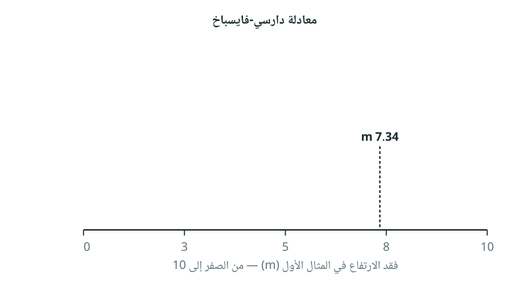

معادلة دارسي-فايسباخ
Darcy–Weisbach equation
معادلة دارسي-فايسباخ تحسب فقد الضغط بالاحتكاك في أنبوب: h_f = f·(L/D)·v²/(2g). تعتمد على معامل احتكاك f الذي يتحدد برقم رينولدز والخشونة النسبية، وهي أساس تصميم شبكات الأنابيب وحساب قدرة المضخات.
عند جريان سائل في أنبوب، يتحول جزء من طاقة الضغط إلى حرارة بفعل الاحتكاك مع الجدار واللزوجة الداخلية. وتحسب المعادلة الفقد: h_f = f·(L/D)·v²/(2g)، حيث f معامل احتكاك دارسي وL الطول وD القطر وv السرعة. وفي الجريان الصفحي f = 64/Re، وفي المضطرب يعتمد f على الخشونة النسبية ε/D ورقم رينولدز وفق مخطط مورودي أو علاقة كولبروك. مثال: أنبوب قطره 0.0500 m وطوله 100 m وسرعة 2.00 m/s وماء عند 20 °C: Re = 1.00×10⁵ تقريباً، وf ≈ 0.0180، إذن h_f = 0.0180 × (100/0.0500) × (4.00/19.6133) = 7.34 m.
كيف تعمل الظاهرة؟
في الجريان الصفحي، تنتظم طبقات السائل في حركة متوازية، والاحتكاك ناتج عن اللزوجة بين الطبقات، فيكون الفقد خطياً مع السرعة. وفي الجريان المضطرب، تنشأ دوامات صغيرة قرب الجدار تستهلك طاقة حركية وتحولها إلى حرارة، فيتناسب الفقد مع مربع السرعة تقريباً. وتزيد الخشونة السطحية من هذه الدوامات، ولهذا يعتمد المعامل على الخشونة النسبية في المضطرب فقط، بينما لا يعتمد عليها في الصفحي لأن الطبقة الحدية تغطي نتوءات الجدار.
العلاقة بالأرقام
h_f = f·(L/D)·v²/(2g)، وΔp = ρ·g·h_f، وRe = ρvD/μ = vD/ν. وفي الصفحي f = 64/Re. مثال: D = 0.0500 m، L = 100 m، v = 2.00 m/s، f = 0.0180 → h_f = 0.0180 × 2 000 × (4.00/19.6133) = 0.0180 × 2 000 × 0.20394 = 7.34 m. والقدرة المفقودة P = ρ·g·Q·h_f، وبمعدل تصريف Q = A·v = 1.963×10⁻³ × 2.00 = 3.927×10⁻³ m³/s تصير P = 1 000 × 9.80665 × 3.927×10⁻³ × 7.34 = 282.6 W.
مفاهيم متقاربة
يُفرَّق بين الفقد الرئيسي والثانوي: الرئيسي على طول الأنبوب، والثانوي في الوصلات والانحناءات والصمامات ويُحسب بـK·v²/(2g). ويُفرَّق بين معامل دارسي ومعامل فانينغ كما سبق، والخلط بينهما خطأ يضاعف الفقد أربع مرات. ويُفرَّق بين الخشونة المطلقة والنسبية: المطلقة بالمتر، والنسبية ε/D بلا وحدة. وأخيراً يُفرَّق بين القطر الهندسي والقطر الهيدروليكي: الثاني 4A/P ويُستعمل للمقاطع غير الدائرية.
حدود التطبيق
المعادلة تفترض جرياناً مستقراً كاملاً التطور، فلا تصف منطقة الدخول حيث يتغير المقطع. ولا تصف السوائل غير النيوتونية التي تتغير لزوجتها بالسرعة. وتفشل في الجريان ثنائي الطور حيث يختلط الغاز بالسائل ويتغير المقطع الفعلي. كذلك لا تُستعمل للأنابيب شديدة الخشونة حيث تصبح ε/D كبيرة جداً وتخرج عن نطاق مخطط مورودي، ولا للجريان المضطرب الشديد حيث تتغير قوانين الاحتكاك.

| الكمية | القيمة | المصدر |
|---|---|---|
| فقد الارتفاع في المثال الأول | 7.34 m | [2] |
| فقد الضغط في المثال الثاني | 52.1 kPa | [2] |
المصادر
- 1 CODATA Value: molar gas constant — NIST — CODATA 2022 recommended values (2024). physics.nist.gov/cgi-bin/cuu/Value?r · اطُّلع عليه 2026-11-21
- 2 University Physics Volume 1 — 14.7 Viscosity and Turbulence — OpenStax, Rice University (2026). openstax.org/books/university-physics-volume-1/pages/14-7-viscosity-and-turbulence · اطُّلع عليه 2026-11-21
استشهد بهذا المصطلح
الصيغتان مبنيتان من بيانات الصفحة نفسها: العنوان والتاريخ ورابط النسخة المنشورة.
معادلة دارسي-فايسباخ — Darcy–Weisbach equation. (2026). ديوان المعرفة — انفراد. https://infiradev.com/diwan/terms/term-darcy-weisbach.html
@misc{term-darcy-weisbach2026,
title = {معادلة دارسي-فايسباخ},
titleaddon = {Darcy–Weisbach equation},
howpublished = {{ديوان المعرفة — انفراد} — مرجع علمي عربي},
year = {2026},
url = {https://infiradev.com/diwan/terms/term-darcy-weisbach.html},
urldate = {2026-11-26},
note = {مراجعة علمية: hermes (مراجعة معتمدة 2026-11-26)}
}
راجعه: hermes (مراجعة معتمدة 2026-11-26) · 2026-11-26 · آخر تحديث 2026-11-21